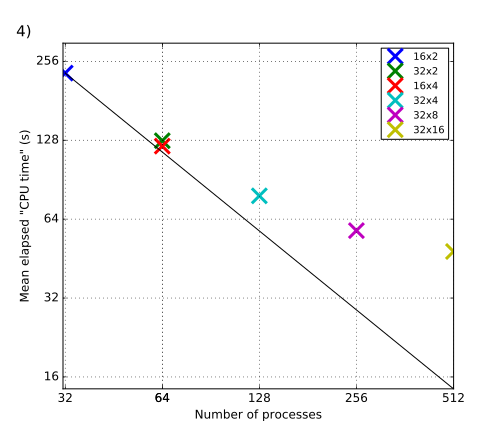

1 Introduction
1.1 Test suite
The Regional Ocean Modeling System (ROMS, see Shchepetkin and McWilliams, 2005) provides three benchmark tests, consisting of an idealized model of the Southern Ocean with three grid sizes:
- benchmark1: 512 x 64 x 30 grid points
- benchmark2: 1024 x 128 x 30 grid points
- benchmark3: 2048 x 256 x 30 grid points
All experiments are integrated for 200 time steps. No grid data is read or written from/to the hard disk.
1.2 Hardware
Computations are performed on ”C4 instances” of Amazon Web Services, which is described as ”featuring the highest performing processors and lowest price/compute performance” in their product range (AWS, 2016c). These instances feature custom Intel Xeon E5-2666 v3 (Haswell) processors.
For C4 instances, AWS defines a ”vCPU” as a hyperthread of the Intel Xeon processor (AWS, 2016c). Note that a stock Xeon E5-2666 v3 has 10 cores and 2 threads per core (Intel, 2016), but that AWS uses a ”custom” version.
The two largest C4 instance types are ”c4.4xlarge” and ”c4.8xlarge”, which differ in the number of vCPUs and the amount of memory:
| Instance type | vCPUs | Memory |
| c4.4xlarge | 16 | 30 GiB |
| c4.8xlarge | 36 | 60 GiB |
1.3 Software
For hardware and software provisioning, we use the CfnCluster tool provided by AWS (Amazon Web Services, 2016a). The tool provides a range of virtual-machine images, which are pre-configured for cluster computing on AWS’ hardware. Pre-installed packages include MPI libraries and schedulers. For the experiments described below, it was necessary to manually install the NetCDF Fortran libraries as a dependency for ROMS (although no NetCDF I/O is performed in the experiments). All results shown were produced with ROMS compiled with Open MPI using the GNU Fortran compiler (GFortran).
| Operating system: | CentOS Linux release 7.2.1511 |
| Linux kernel: | v3.10.0 x86_64 |
| Fortran compiler: | gcc-gfortran 4.8.5 |
| MPI library: | openmpi 1.10.0 |
2 Preliminary results
Fig. 1 shows execution time for benchmark2 for various tiling configurations on a single c4.4xlarge instanc (16 vCPUs, 30 GiB memory). The cause for the increase in execution time from the 1-core experiment to the 2-core experiments is unclear to us. For the remaining experiments, the data shows the expected scaling. Note that multi-threading is achieved by using the MPI library, but that computations are performed on a single node, such that no influence of networking bandwidth or latency is expected.

We use only 32 vCPUs of the c4.8xlarge to avoid potential problems with some Linux operating systems which have a vCPU limit of 32 (Amazon Web Services, 2016b).

2.1 Computational and monetary costs of a realistic study
The preliminary test above allow a rough estimate of the computational and monetary costs involved in a realistic study. By monetary cost we mean the financial cost of renting AWS’ hardware to conduct a study of a given computational cost. As an example we consider Kumar et al. (2015), who validate the midshelf and surfzone circulation generated by a numerical model against observations. They use a coupled ROMS-SWAN model and compare it to observations from the 2006 Huntington Beach (San Pedro Bay, California, U.S.A.) experiment. We assume that such studies, which investigate the transport processes directly adjacent to the coast, are particularly important for commercial applications. Whether or not it is actually technically feasible to conduct such a highly complex state-of-the-art simulation on AWS’ cloud infrastructure, is not shown here. Instead, the objective here is to gain a (very rough) order-of-magnitude estimate of the involved cost, assuming technical feasibility.
2.1.1 Components of the numerical experiment
The numerical experiment of Kumar et al. (2015) consists of the following components:
- Wind forcing
- Wave forcing
- Tide forcing
- Buoyancy forcing
which are coupled by the open-source Coupled Ocean-Atmosphere-Wave-Sediment (COAWST) Transport model (Warner et al., 2008; Woods Hole Coastal and Marine Science Center, 2016), which couples an atmospheric (Weather Research and Forecasting model, WRF), wave (SWAN), three-dimensional circulation and stratification (ROMS) and sediment transport models. COAWST is integrated by the Model Coupling Toolkit (MCT, UChicage Argonne 2016) to exchange data fields between the models. They use the following nested grids:
- U.S. West Coast and eastern Pacific (L0): , area ( grid points)
- Southern California Bight (L1): , area ( grid points)
- Interior bight region (L2): , area ( grid points)
- San Pedro Bay (L3): , area ( grid points)
- Huntington Beach, Newport Beach (shelf break to inner shelf and surfzone): , area ( grid points)
- Huntington Beach (mid-shelf to surfzone): , area ( grid points)
As boundary conditions (forcing fields) they use1
- Lateral forcing: The parent grid L0 is forced with a combination of lateral boundary conditions from an assimilated global oceanic dataset (Carton and Giese, 2008). Freshwater flux from river runoff is included. In addition, barotropic tidal elevation and velocities are projected onto the boundaries of L1.
- Surface forcing (wind-stress, heat, radiative and freshwater) is provided by a doubly nested WRF model with (for L0) and (for L1, L2, L3), embedded within the NCEP North American Regional Reanalysis. Surface temperature and salinity are relaxed to monthly averages from Carton and Giese (2008).
The L0-L5 domains are one-way nested, i.e. L0-L4 each provide boundary condition data for their respective child grid. Daily L0 solutions are used as a lateral boundary condition for L1. L1 (L2) solutions are used as L2 (L3) lateral boundary conditions every . Note again that L1’s boundary condition includes barotropic tidal elevation and velocities in addition to information provided by its parent.
The model is spun up for with climatological surface forcing.
For time-stepping the shelf grids, Kumar et al. (2015) state that
- L4 and L5 are integrated for 92 days with a baroclininc time step of and , respectively.
- wave action density in SWAN evolves with a time step of and , respectively. Exchange of information between the circulation and wave models occurres every .
2.1.2 Computational cost
Kumar et al. (2015) do not report the time step used in their L0-L3 models. Assuming an ocean depth of , the barotropic time step is constrained by the CFL condition to roughly for L0 and L1, and for L2 and L3, according to the simplified formula (which does not hold strictly in this practical application)
| (1) |
where () is the barotropic time step (lateral grid spacing), and is standard gravity. Assuming that the baroclinic time step is a factor of 10-20 longer than the barotropic time step, this yields (L0, L1) and (L2, L3), respectively. For a simulation, baroclinic time steps are required. Clearly, these estimates are very rough. For example, to account for the shallower depth of the L2 and L3 grids, one may assume a depth decrease by a factor of 10, and accordingly increase by a factor of 3 for L2 and L3.
So far, no results are available measuring execution time for grids of similar size as L0-L3. The closest matching available result is for benchmark2, with a grid size of xx data points, which is roughly 1/10 of the number of spatial data points in L0-L3. Note that it is always possible to assume identical physical dimensions of the grid spacing (including the temporal lattice) between benchmark2 and L0-L3, since the benchmarking results are independent on physical dimensions (but depend only on the amount of data points).
2.1.3 Monetary cost
Hence, in the following we may assume and is similar for benchmark2 and L0-L3, keeping in mind that the amount of processed data is an order of magnitude less than for each of the 4 experiments L0-L3. Fig. 1 shows that benchmark2 takes roughly to complete on a 16-core c4_4xlarge instance using the GFortran compiler. The number of time steps integrated in benchmark2 is 200, i.e. about 2 time steps per second are processed. It follows that a spin up time for benchmark2 takes roughly to complete.
The instance type c4_4xlarge is currently (2017/01/12) priced at $0.796 per hour for on-demand use, resulting in a total of $